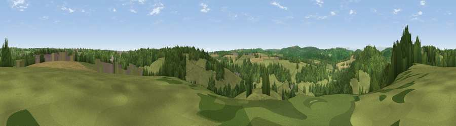

Viewpoint near Whitecliff
#22496 in England · top 45% of its area beats it · near WhitecliffWhere it is
The exact computed spot (SO 56075 10725). Click the marker for map links.
The view, rendered

A 360° render of this exact spot computed from the terrain model, tree cover and land cover — summer colours, afternoon light, calibrated against photographs of famous viewpoints. Real trees, hedges and buildings will differ in detail.
The panorama
Grey silhouette: terrain skyline in each direction (720 bearings, Earth curvature and refraction included). Dashed green: skyline with trees (+15 m) and buildings (+8 m) as obstacles. Blue strip: how far the ground is visible on each bearing.
Where the view opens
Wedge length = distance to the farthest visible ground on that bearing (vegetation-aware). Rings at 10, 25 and 50 km.
What fills the view
52% woodland · 34% grassland · 12% cropland · 1% bare ground ·
Angular shares of the visible panorama (visual magnitude), not map area. Landscape diversity 0.46 (0–1 Shannon).
Key numbers
More beautiful places nearby
The staircase of upgrades: each row has a higher view potential than everything closer. Driving times are estimates from straight-line distance, calibrated against real road routing — check an actual route before setting out.
| Place | Direction | Drive | Score |
|---|---|---|---|
| Buck Stone | NW · 2 km | ~6 min | 71.0 |
| Viewpoint near Goodrich | NNE · 8 km | ~16 min | 74.0 |
| Viewpoint near Ruardean | NE · 9 km | ~18 min | 74.2 |
| Skenchill | NW · 11 km | ~21 min | 75.8 |
| Chase Wood Hill | NNE · 12 km | ~23 min | 77.6 |
| Garway Hill | NW · 19 km | ~32 min | 84.6 |
| Millennium Hill | NE · 35 km | ~53 min | 86.9 |
| Worcestershire Beacon | NNE · 40 km | ~60 min | 87.1 |
51.79344, -2.63829 · source: screening · position refined by local search. Computed location — check access rights before visiting.